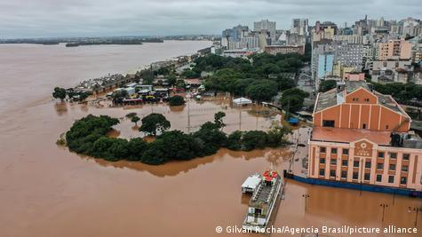

Noticias

Rio Grande do Sul caminha para a lista das maiores tragédias do país
Com o aumento do índice do aquecimento global, chuvas intensas estão cada vez mais recorrentes
Leia
Tornados e tempestades deixam ao menos 15 mortos nos EUA
O aquecimento dos oceanos está aumentando a quantidade de umidade na atmosfera, cujo o qual aumenta a umidade que é um grande fator para a formação de tornados
Leia
Ásia foi a região mais afetada por desastres climáticos em 2023 mostra ONU
A combinação de fatores geográficos, climáticos, socioeconômicos e o impacto das mudanças climáticas fazem da Ásia a região mais afetada por desastres relacionados ao clima.
Leia